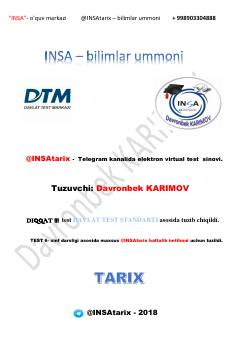

T66-sinf tarix fani bo'yicha davlat standartlari asosida tuzilgan o'quv testlari to'plami.
Ushbu qo'llanma 6-sinf tarix fani bo'yicha davlat ta'lim standartlari asosida tuzilgan test savollarini o'z ichiga oladi. Testlar qadimgi dunyo tarixi, jumladan, qadimgi sivilizatsiyalar, davlatlar va tarixiy jarayonlar bo'yicha bilimlarni mustahkamlash uchun mo'ljallangan.